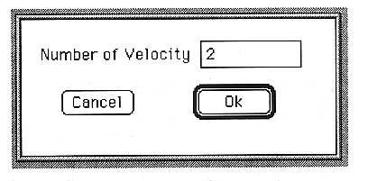
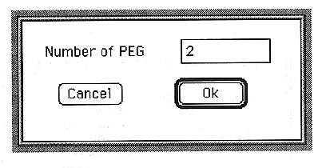
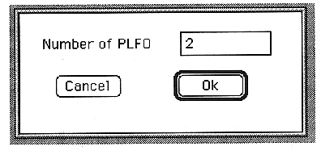

Return to previous page ｜ Return to menu ｜ Go to next page
-
Velocity
- Set the number of velocities. The following dialog box appears.

A value smaller than the current velocity number cannot be set.
●PEG
- Set the number of PEGs. The following dialog box appears.

A value smaller than the current PEG number cannot be set.
●PLFO
- Set the number of PLFOs. The following dialog box appears.

You cannot set a value less than the current number of PLFOs.
Return to previous page ｜ Return to menu ｜ Go to next page